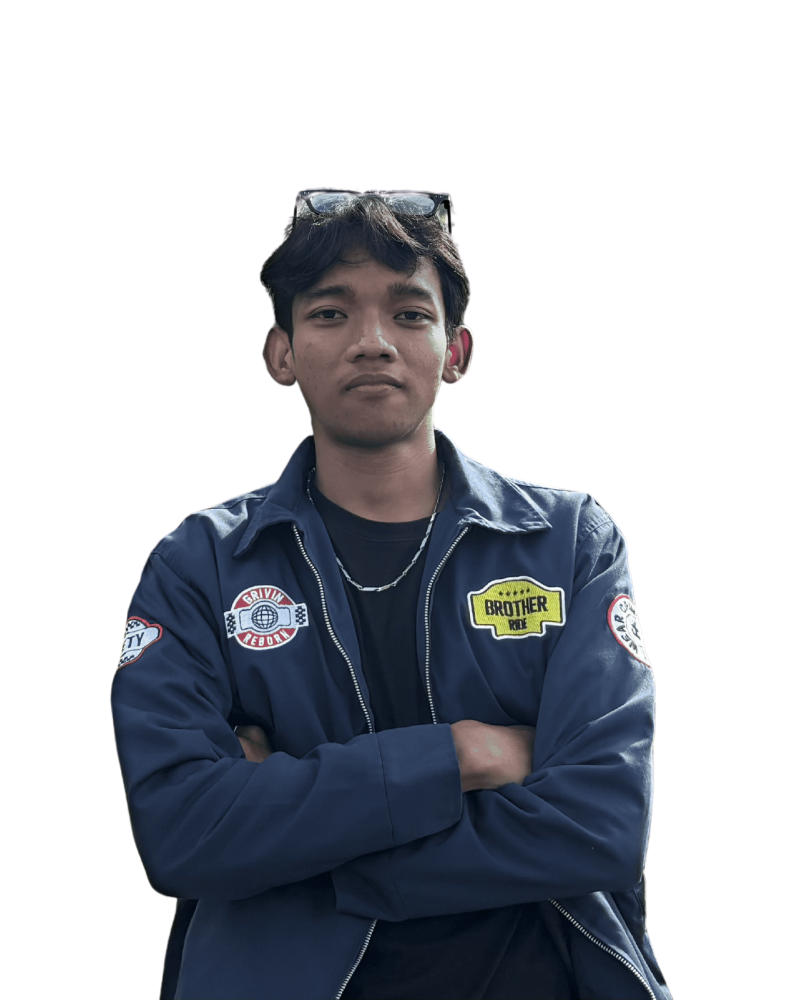

Perjalanan Belajar
Inovasi Mengajar
Dengan super power.
Dokumentasi perjalanan belajar terstruktur, refleksi komprehensif, dan inovasi pembelajaran selama perkuliahan PPG Calon Guru. Temukan bagaimana saya bertransformasi menjadi pendidik profesional masa depan.



Membangun fondasi filosofis pendidikan Ki Hadjar Dewantara, menghubungkan konsep teoritis dengan realitas di kelas, serta mengintegrasikan kompetensi digital dalam pembelajaran abad ke-21 yang berkesinambungan.
Desain Pembelajaran yang
Berpusat pada siswa.
Penerapan asesmen diagnostik, pembelajaran berdiferensiasi (konten, proses, produk), dan model Project-Based Learning (PjBL) untuk memastikan proses belajar yang inklusif, relevan, serta adaptif terhadap kebutuhan setiap anak.
Eksplorasi Mata Kuliah &
Refleksi mendalam.
Dokumentasi komprehensif atas 11 mata kuliah yang ditempuh selama Semester 1 dan Semester 2. Mengintegrasikan pemahaman konseptual, analisis kasus di kelas, serta pengalaman praktik lapangan.
Fondasi Pedagogik & Praktik Terbimbing
6 Mata Kuliah


Visi Pribadi
Pendidik
Filosofi mengajar Ki Hadjar Dewantara, komitmen etis, dan cita-cita menjadi guru profesional reflektif masa depan.
[Dokumen Visi & Komitmen Guru]
Refleksi
Semester 1
Sintesis komprehensif 6 mata kuliah fondasi dan evaluasi kritis pengalaman awal PPL Terbimbing di sekolah mitra.
[Jurnal Refleksi Kritis Sem 1]
Refleksi
Semester 2
Evaluasi mendalam pembelajaran sosial emosional, projek kepemimpinan komunitas, dan praktik PPL Mandiri penuh.
[Jurnal Refleksi Kritis Sem 2]
Karya Inovasi
Pembelajaran
Artefak modul ajar berdiferensiasi, produk media digital interaktif berbasis TPACK, serta dokumentasi gelar karya.
[Kompilasi Artefak Inovatif]